汇编语言的前世今生
- TAGS: Assembly
主要内容
- 用电表示数字
- 二进制加法机
- 寄存器
- 带寄存器的加法机
- 能做四则运算的机器
- 机器指令
- 内存和内存地址
- 练习1
- 字节
- 内存访问
- 存储器的分类
- 练习2
- 自动计算
- 处理器
- 汇编语言的产生
- 练习3
汇编语言的前世今生
用电表示数字
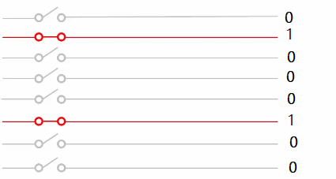
这是由开关和导线组成的成电路。在图中，线条表示导线。导线上有开关，灰色导线开关是断开的，导线上没有电流通过；红色导线开关是闭合的，有电流通过。
二进制计数法，采用0和1的结合来表示数字。0和1很适合用开关的断开与闭合以及电流的有和无来体现。
这里，上面的开关是断开的没有电流通过用数字 0 表示，下面的开关是闭合的有电流通过用数字 1 表示。依次记下这一排导线每根导线的状态并组成二进制数 0100 0100，换算成十进制数为 68。
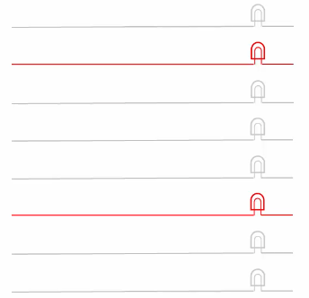
在现实中导线上有没有电流通过我们是看不见的，如上图所示我们可以在导线上 安装灯泡。导线上没有电流通过时电流时灯泡不发光，表示传送的是 0；导线上 有电流通过时电流时灯泡发光，表示传送的是 1；如此记录下灯光状态组成二进 制数字就知道这排导线传输的数字是多少了。上图中灰色表示不发光，红色表示 发光。0100 0100
二进制加法机
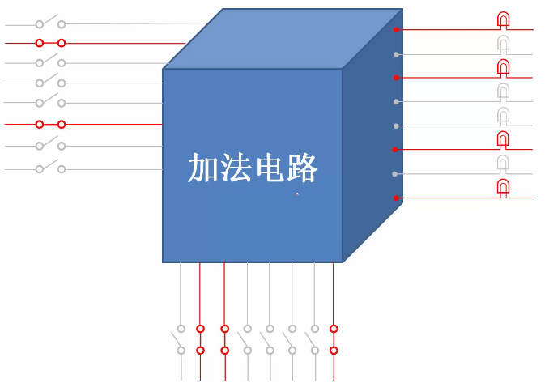
上图加法电路采用二进制工作，左边有 8 根导线，每根导线都通过开关把电流 送到机器里，这 8 根导线可以通过拨动开关来组成并代表一个 8 位的二进制数， 这里输入的二进制数为 0100 0100，十进制数 68；同样下面的一排导线输入的 二进制数 0110 0001，十进制数 97；右边是得到的二进制数 1010 0101，165。 68 加上 97 等于 165， 显然相加的结果是对的。
加法电路内部如下图，但不是这里我们要关心的话题，只需要知道功能就可以了。有兴趣的话看看计算机原理。
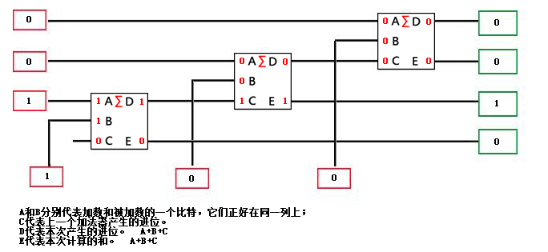
\(D = ( \overline{A} BC ) + ( A \overline{B} C ) + ( AB \overline{C} ) + (ABC)\)
\(E = ( \overline{AB} C ) + ( \overline{A} B \overline{C} ) + (A \overline{BC}) + (ABC)\)
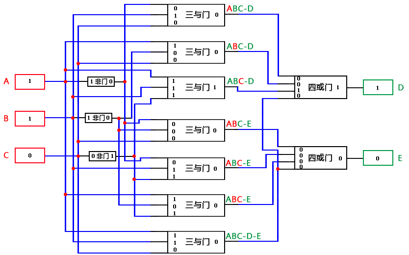
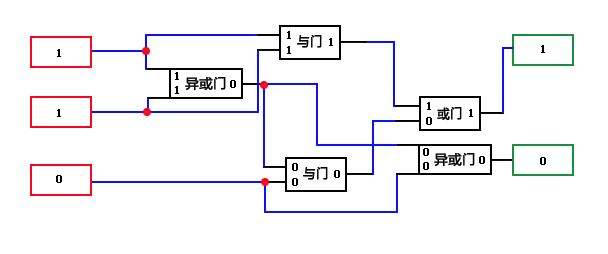
寄存器
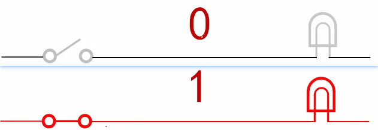
一般的电路，它们的工作都是非常直接的，比如说我们可以用开关来控制灯泡的亮和灭。像这样切断电路。灯泡立马就不亮了。这表明，电线上传送的是数字 0 。相反，一旦我们闭合开关，接通电路灯泡，立马就亮了。这表明，电路上传送的是数字 1。
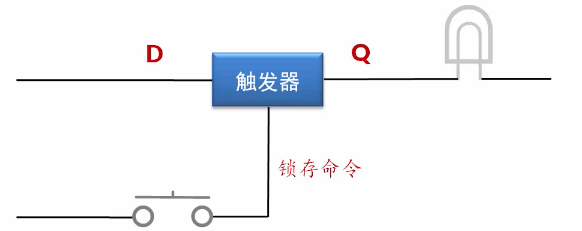
后来，人们发明了一个装置，叫做 触发器 。如这一幅图所示，一个特制的触发器，有一个输入端 D，以及一个输出端 Q。触发器的特点是，它可以把输入保存起来，这叫做 锁存 。如果你想用眼睛观察触发器所存的内容，可以像这样。在输出端连接一个灯泡，通过是否发光来观察锁存的是零还是一。
那么，触发器什么时候锁存呢？这是可以控制的。注意在触发器的下面有一根导线，以及一个按键开关。按键开关和我们前面讲的那些开关是不一样的。按键开关有个特点， 当你按下它时，它会接通电路；当你松手后，它又会弹起来，断开电路 。这个按键开关用于决定是否执行锁存，或者说用来 发送锁存命令 。
平时按键开关处于断开状态。像这样处于断开状态，触发器不会执行锁存动作。无论从输入端 D 来的是高电平还是低电平，或者说，不管输入的是零还是一，都不会进入触发器内部，都不会被触发器内部的电路保存，更不会出现在输出端 Q，即不影响输出端 Q 原来的状态。
但是一旦我们按下按键开关，则触发器会立即执行一个锁存动作。不管输入端是零还是一，都会被触发器锁存起来，并立即出现在输出端 Q。锁存之后，无论输入端 D 再怎么变化，都不会影响到所存的内容，也不会影响到 Q 端原来的输出。除非再次按下按键开关发送锁存命令。
现在我们来做个实验。
- 假定触发器原先保存的是低电平，也就是 0，此时灯泡不发光，说明触发器保存和输出的是零，是低电平。
- 再假定输入端，是高电平也就是 1。在按下按键开关之前，这个输入不会被锁存。现在我们按下按键开关，发出锁存命令。
请注意仔细观察电路状态的变化。可以看出，一旦按下按键开关。输入就被锁存。同时，触发器输出所存的高电平，也就是 1，这个 1 可以通过灯泡的发光被观察到。锁存之后，按键开关又处于断开状态。此时，即使输入端变成低电平，也就是 0 。也不会被锁存。触发器保存和输出的依然是高电平，是 1。
现在我们再次按下按键开关，请注意观察。可以看出，一旦按下按键开关。输入就被锁存。触发器输出所存的低电平，也就是零。这个低电平，可以通过灯泡不发光观察到，灯泡不再发光，说明触发器锁存和输出的是数字零，是低电平。锁存之后，按键开关又处于断开状态。此时，即使输入端变成高电平，也就是 1，也不会被锁存。触发器保存和输出的依然是低电平 0。
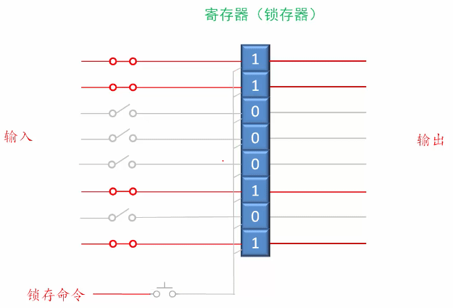
一个触发器只能保存一个比特。为了保存一个大的二进制数。如这一幅图所示，可以使用若干个触发器，将它们像这样组合在一起。就形成了一个新的器件，叫做 寄存器 ，或者叫锁存器。寄存器是一个 多输入多输出的器件 ，它的两边都连着一排导线。左边这排导线用于输入，右边这排导线用于输出。下面还有一个按键开关，用来向组成寄存器的所有触发器提供锁存命令，发送锁存命令，毕竟寄存器是由这些触发器组成的。
假定输入端输入的是二进制数字 11000101。再按下按键开关发送锁存命令之前，这个输入不会被锁存，不会被寄存器所存。当我们按下按键开关，这个数字立即会被锁存。
现在让我们看一下锁存过程，请注意观察。
按下了按键开关，又断开了。这个时候，数据立即被锁存。出现在寄存器内部 11000101。在数据被锁存的同时，锁存的数据也通过输出端送出来。一旦输入的数字或者说电平被锁存，那么，即使这些输入撤销了也没有关系，变化了也没有关系，因为他们已经被锁存在寄存器内部。
如果需要寄存器，可以随时所存新的数字，以前所存的数字会被新的数字冲掉。从这个意义上来说。任何数字都是临时保存在这里，不会长久，属于临时性的寄存，这就是寄存器一词的由来。
带寄存器的加法机
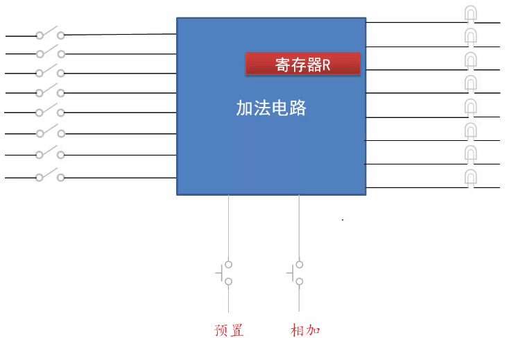
上图为前面加法电路的改进版本，加法电路里加入了寄存器，为方便起见称之为寄存器 R。加法电路左侧是一排带开关的导线，用于输入相加的数字；右边的一排导线用于输出计算的结果，计算结果的输出是实时的，计算结果可以通过每根导线连接的灯泡观察到；加法电路的另一个变化是，它只有一组输入，相加应该是输入 2 组数再相加，但实际上只用一组输入是很方便的；电路的下面有 2 个电路开关 预置 和 相加 ，它就是用来解决一组输入相加的问题的。
范例：计算 5 + 7 + 25
- 左边输入二进制 5，开关闭合为 1， 0000 0101
- 再预置按钮，将数字 5 保存到寄存器 R。并且加法电路右边的输出也是 5，因为输出是实时的。
- 左边输入二进制 7，0000 0111
- 按相加按钮，左边数字 7 和寄存器 R 中原有的 5 相加，相加后结果 12 依然保存在寄存器 R 中。右侧实时输出 12
- 左侧拨动开关，输入 25，0001 1001
- 按相加按钮，左边数字 25 和寄存器 R 中原有的 12 相加，相加后结果 37 依然保存在寄存器 R 中。右侧实时输出 37
如果还有更多数字要加，和上面操作一样，拨动准备的数字按相加按钮就可以了。
能做四则运算的机器
只做加法功能太简单了，如下图，对加法机进行了改进，增加了减法、乘法、除法，称为 四则运算电路
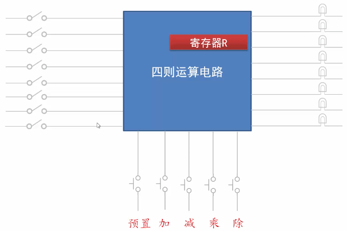
在电路的下面有 预置、加、减、乘、除 这几个开关，用来控制运算器内部的操作。
- 按“预置”开关将执行锁存操作，左侧一排开关生成的二进制数被锁存在寄存器 R 中，或者说被预置到寄存器 R 中。
- 按“加”按钮，寄存器 R 原有的数字和左侧开关生成的数字相加，相加的结果还位于寄存器 R 中。
- 按“减”按钮，寄存器 R 原有的数字和左侧开关生成的数字相减，相减的结果还位于寄存器 R 中。
- 按“乘”按钮，寄存器 R 原有的数字和左侧开关生成的数字相乘，相乘的结果还位于寄存器 R 中。
- 按“除”按钮，寄存器 R 原有的数字和左侧开关生成的数字相除，相除的商还位于寄存器 R 中。
绝大多数数学问题都可以归结于基本的加减乘除运算。如 3 的 2 次方，可以用 3 乘以 3 来完成。
范例：( 7 + 8 ) x 3 / 5 = 9
- 左侧拨动开关，准备数字 7，0000 0111
- 再预置按钮，将数字 7 预置到寄存器 R 中。并且运算电路右边的输出也是 7，因为输出是实时的。
- 左侧拨动开关，准备数字 8，0000 1000
- 按“加”按钮，寄存器 R 中原有的 7 和左边数字 8 相加，相加后结果 15 依然保存在寄存器 R 中。右侧实时输出 15，0000 1111
- 左侧拨动开关，准备数字 3，0000 0011
- 按“乘”按钮，寄存器 R 中原有的 15 和左边数字 3 相乘，相乘后结果 45 依然保存在寄存器 R 中。右侧实时输出 45，0010 1101
- 左侧拨动开关，准备数字 5，0000 0101
- 按“除”按钮，寄存器 R 中原有的 45 和左边数字 5 相除，相除的商 9 依然保存在寄存器 R 中。右侧实时输出 9，0000 1001
寄存器用于临时保存运算结果，但只有一个寄存器，在进行一些复杂运算时肯定是不够用的。如 \((207 + 9) \times (56 - 48) = ?\) ，207 + 9 的结果 216 用纸记录下来，再重新计算 56 - 48 的结果 8 用笔记录下来，再计算 216 / 8
机器指令
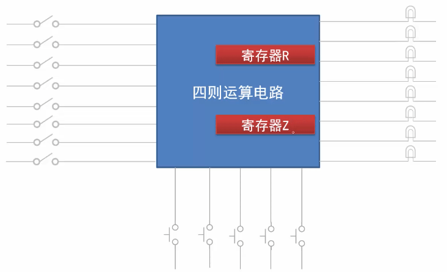
上一节中我们认识到只有一个寄存器，这使得运算器的功能受到限制，操作也很麻烦。为此如上图所示，我们可以在运算器里多放几个寄存器。
实现更多功能，如
- 左侧数字可选择存放到寄存器 R 或 Z 中，左侧数字与寄存器做加减乘除操作
- 可以将寄存 R 中的数字传送或者复制到寄存器 Z，也可以将寄存器 Z 中的数字复制到寄存器 R，同时可以做加减乘除操作，而且可以选择将运算结果保存到哪个寄存器。
大约有 20 个动作可以进行，对于每个操作大约有 20 个开关来控制。这还只是两个寄存器，如果增加寄存器或者增加别的的功能，那开关就更多了。这不是长久之计，我们要另想办法。
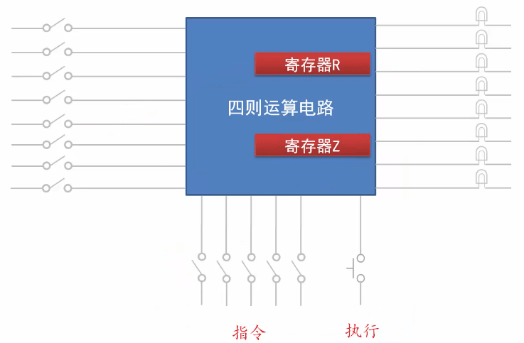
既然用一排开关可以生成参与运算的数字，那么也就可以用另一排开关来组合出我们要进行的操作。如上图所示，为此在运算电路的下面安装了 5 个闸刀开关，来往常一样开关的闭合表示 1，开关断开表示 0，组合出的 5 位二进制数字。不同时的二进制数字代表不同的含意，代表不同的操作。因此我们把这排开关所生成的数字叫做 指令(Instruction) 。指令就是给台机器下达的操作命令。
下面给出了这 5 个开关可以组合出的指令，以及它们所指定的操作（ 只是假设，不用记 ）：
| 指令 | 机器动作 |
| 00001 | 将外数传送到寄存器 R |
| 00010 | 将外数传送到寄存器Z |
| 00011 | 将寄存器R传送(复制)到寄存器Z |
| 00100 | 将寄存器Z传送(复制)到寄存器R |
| 00101 | 将寄存器R和外数相加，结果在寄存器R |
| 00110 | 将寄存器R和外数相减，结果在寄存器R |
| 00111 | 将寄存器R和外数相乘，结果在寄存器R |
| 01000 | 将寄存器R和外数相除，结果在寄存器R |
| 01001 | 将寄存器Z和外数相加，结果在寄存器Z |
| 01010 | 将寄存器Z和外数相减，结果在寄存器Z |
| 01011 | 将寄存器Z和外数相乘，结果在寄存器Z |
| 01100 | 将寄存器Z和外数相除，结果在寄存器Z |
| 01101 | 将寄存器R和寄存器Z相加，结果在寄存器 R |
| 01110 | 将寄存器R和寄存器Z相减，结果在寄存器 R |
| 01111 | 将寄存器R和寄存器Z相乘，结果在寄存器 R |
| 10000 | 将寄存器R和寄存器Z相除，结果在寄存器 R |
| 10001 | 将寄存器Z和寄存器R相加，结果在寄存器 Z |
| 10010 | 将寄存器Z和寄存器R相减，结果在寄存器 Z |
| 10011 | 将寄存器Z和寄存器R相乘，结果在寄存器 Z |
| 10100 | 将寄存器Z和寄存器R相除，结果在寄存器 Z |
运算电路下面的“执行”按钮，按指令的指示来执行相应的操作。
范例： \((207 + 9) \times (56 - 48) = ?\)
- 拨动左侧开关生成数字 207
- 拨动下面的指令开关，设置成 00001，将外数传送到寄存器 R
- 按下“执行”开关，将 207 锁存到寄存器 R 中
- 拨动左侧开关生成数字 9
- 拨动下面的指令开关，设置成 00101，将寄存器R和外数相加，结果在寄存器R
- 按下“执行”开关，将 寄存器 R 中的 207 和 外数 9 加，结果 216 保存在寄存器 R 中
- 拨动左侧开关生成数字 56
- 拨动下面的指令开关，设置成 00010，将外数传送到寄存器Z
- 按下“执行”开关，将 56 锁存到寄存器 Z 中
- 拨动左侧开关生成数字 48
- 拨动下面的指令开关，设置成 01010， 将寄存器Z和外数相减，结果在寄存器Z
- 按下“执行”开关，将 寄存器 Z 中的 56 和 外数 48 加，结果 8 保存在寄存器 Z 中
- 拨动下面的指令开关，设置成 10000，将寄存器R和寄存器Z相除，结果在寄存器 R
- 按下“执行”开关，将 寄存器 R 中的 216 和 寄存器 Z 中 8 相除，相除的商 27 保存在寄存器 R 中
内存和内存地址
内存
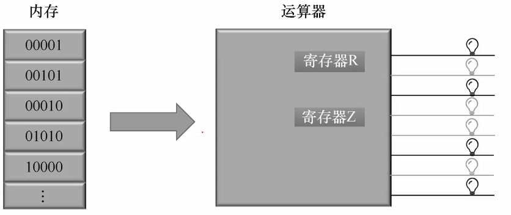
随着机器的增加，手工操作越来越繁琐。需要 把这些指令保存在容器里，让机器自动按顺序执行 。上图中，左边是保存指令的容器，右边是运算器，运算器可以一条条从容器里取出二进制数（指令）并加以执行，像这样的容器就是 内存 。
内存是由大量的 内存单元 堆叠而成，在这里组成内存的每一个小方块都是一个内存单元。和这副图不同在主流的计算机内存里每个内存单元的长度是 8 个比特，可以保存一个 8 位的二进制数。
内存地址
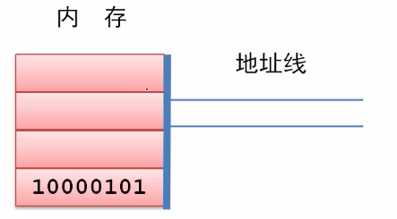
上图中，最下方内存单元里就存储了一个 8 比特的二进制数 1000 0101。
内存单元很多如何区分它们呢？每个内存单元都有一个唯一的编号，第一个内存单元的编号是 0，第二个是 1，第三个内存单元的编号是2，后面的单元也依次编号。单元的编号就是这个单元在内存中的位置，通常称为 地址 。
内存是由大量的内存单元组成，那如何指定读写是哪个单元？ 为此内存使用一排电线–“ 地址线 ”来指定内存单元的编号。上图中有 2 根地址线用来内存单元的地址。显然地址线的数量决定了最多我们能访问几个内存单元。2 根地址线只能组合出 4 个二进制数，00，01，10，11，4 个二进制数只能访问 4 个内存地址，用十进制表示 0，1，2，3号内存单元。
范例： 8 根地址线
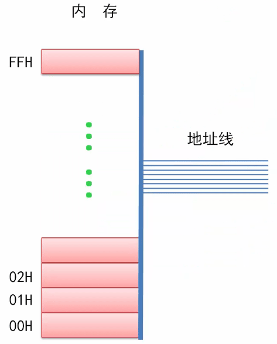
如果有 8 根地址线，这 8 根线可以组合出 256 个二进制数，从 0000 0000 一直到 1111 1111，所以 8 根地址线只能访问 256 个内存地址单元。内存单元的编号就是它的地址，习惯上用十六进制标记在它的左侧，从 00H、01H、02H 一直到 FFH，数字后的 H 表示这个数字采用十六进制，同时在一个数字前面加 0 是可以的不会改变它的大小。
如果地址线数为 n 个，通过它访问内存地址单元的数量是 2 的 n 次方个。
小结：
- 地址： 内存单元的编号，一般用十六进制表示
- 地址线: 指定内存单元的编号
- 如果地址线数为 n 个，通过它访问内存地址单元的数量是 2 的 n 次方个。
练习1
- 在主流的计算机上，内存单元的长度是( )个比特。
- 内存由内存单元组成，每个内存单元都有一个编号，这个编号也叫地址，对吗?
3、内存的容量就是内存单元的数量。如果地址线的数量是20，则最多可以访问( ) 个内存单元，这些内存单元的地址范围是(用十六进制表示)从___到____。
答案
1. 8 2. 对 3. 2^20 = 104856, 从 00000H 到 FFFFFH
字节
在计算机领域字节的概念被频繁使用。 字节 (Byte，简写为B)，描述二进制序列的长度单位，约定 8 个比特组成一个字节。其它常用单位：千字节(KB)、兆字节(MB)、吉字节(GB)、太字节(TB)、EB、PB、YB
2进制数 1000 1101，因为这2进制数有8个比特, 所以它的长度是一个字节 2进制数 1101 0001 0111 1110，这个2进制数包含16个比特，那么它的长度是2个字节 在主流的计算机上，内存单元的长度是8个比特，换句话说每个内存单元的长度就是一个字节。
换算关系：
1 KB = 1024 B 1 MB = 1024 KB 1 GB = 1024 MB 1 TB = 1024 GB
范例：
10485760 字节 = 10240 x 1024 = 10240 KB = 10 x 1024 KB = 10 MB
内存访问
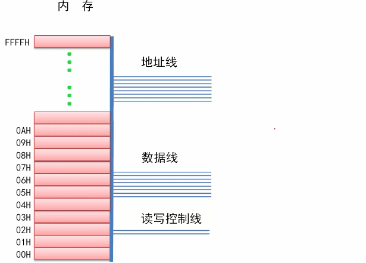
内存用来保存或者读出数据。为此如上图所示，除了地址线外，内存上还需要另外一排导线，这排导线叫 数据线 ，要写入的数据通过数据线进入内存，读出来的数据也通过数据线送到外面。可以往内存里写数据也可以从内存里读出数据， 读和写统称为访问(Access) 。为了访问内存它需要有 读写控制线 ，用来指明是读操作还是写操作以及数据的宽度（读写字节数）。
在写入时
- 在地址线上给出一个地址
- 在数据线上给出一个要写入的数字
- 并通过读写控制线上指明是写操作以及数据宽度
- 内存会把数据从数据线上写入指定的地址处
在读出时
- 在地址线上给出一个地址
- 通过读写控制线上指明是读操作以及数据宽度
- 数据就会从指定的地址处通过数据线读出来
假如，内存地址线有 16 根，可以访问 \(2^16 = 65536\) 个内存单元，地址范围从 00H 到 FFFFH。内存有 8 根数据线 写入：
- 通过地址线发出的地址是 6，表示选中内存里地址为 6 的内存单元
- 通过数据线输入的是 255 (1110 0001)
- 读写控制线状态是写入一个字节 1B
- 数据线上的 1110 0001 会被写入到地址为 6 的单元，这个单元的内容是 1110 0001
读出：
- 地址线上给出地址 6
- 在读写控制线状态为读出一个字节
- 一个字节长的数据就会从地址为 6 的内存单元读出并送到数据线上，通过数据线送出
组成内存的最基本单元是字节，字节也是内存访问的最小长度，也是最基本长度，即所有地内存都支持按内存访问 。但为了提高数据处理的速度和效率，连接内存的数据线可能会超过 8 根，最小是 8 根，如 16、32、64 根，即数据线的宽度可能是16位、32位或者64位的。
数据线宽度：
- 采用 8 根数据线，单次只能读写一个字节的数据
采用 16 根数据线，单次即可读写 8 位数据，也可读写 16 位数据
如，给定地址 2，读写 8 位数据，16 根数据线只有低一半是有效的。
如，给定地址 2，读写 16 位数据（2 个字节，Word），则使用全部的 16 根数据线。02H - 03H 连续地址单元共同组成 16 位数据，即一个字 word。
采用 32 根数据线，单次即可读写 8 位、16 位、32 位数据
如，给定地址 4，读写 8 位数据，32 根数据线只有低 8 位有效。
如，给定地址 4，读写 16 位数据，32 根数据线低 16 位有效。 04H到05H连接的字节单元共同组成一个 16 位数据
如，给定地址 4，读写 32 位数据，使用全部 32 根数据线。 04H到07H这 4 个连接的字节单元共同组成一个 32 位数据。注意 32 位数据折合为 2 个字称为 Double Word 双字。
采用 64 根数据线，单次即可读写 8 位、16 位、32 位、64数据
如果每次读写 64 位，折合 4 个字，称为四字 Quad Word。一个 4 字占用 8 个连续的字节单元。这个 8 连续的字节单元可一次性读出或写入。
存储器的分类
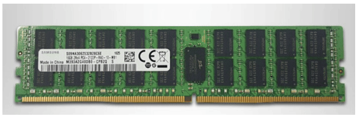
上图所展示是的内存，也叫内存条。它是计算机内部最主要的存储器，所以叫内存储器或者叫主存储器，简称内存或主存。其次它一般被设计成扁平的条状电路板，所以叫内存条。
内存是存储器的一种，而存储器在种类上有很多，包括硬盘、U盘、甚至寄存器也是。
练习2
- 如果地址线的数量是 20，则可以表示的地址范围是（用十六进制表示）从____到____，最多可以访问的内存容量是___ 字节，折合____KB或者____MB。
- 一个内在有 64 根数据线，每次（单次）可读写 8 位、16 位、32 位或者 64 位的数据，这分别叫做字节、____、____和_____。给定地址 8，按字节写入时，写入的是地址为______的单元；按字写入时，写入的是地址为_______的单元；按双字写入时，写入的是地址为________的单元；按四字写入时，写入的是地址为____________的单元。
答案
1. 如果地址线的数量是 20，则可以表示的地址范围是（用十六进制表示）从__00H__到__FFFFFH__，最多可以访问的内存容量是_104856__ 字节，折合__1024__KB或者_1___MB。 地址用二进制表示就是 20 个比特，从 0000 0000 0000 0000 0000 到 1111 1111 1111 1111 1111，换算十六进制是从 0H 到 FFFFFH 5个FH加1H，100000H = 1048576字节，1048576字节/1024 = 1024KB ，1MB 2. 一个内在有 64 根数据线，每次（单次）可读写 8 位、16 位、32 位或者 64 位的数据，这分别叫做字节、__字__、_双字___和_四字__。给定地址 8，按字节写入时，写入的是地址为___08H___的单元；按字写入时，写入的是地址为___08,09____的单元；按双字写入时，写入的是地址为___ 08,09,10,11_____的单元；按四字写入时，写入的是地址为____8,9,10,11,12,13,14,15________的单元。
自动计算
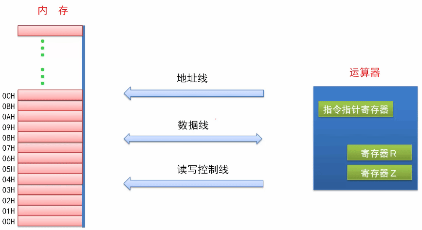
回忆一下我们发明内存的初衷是什么？我们的愿望是 把代表指令的二进制数保存到内存里，让机器自动按顺序一条一条的取出来执行 。为此，在引入了内存之后，我们对运算器也做了改进。如上图所示，经过改进之后的运算器，通过地址线、数据线和读写控制线与内存相连，而且它最大的变化是可以自主工作，可自动的从内存里面按顺序取指令并执行指令。
为了跟踪每一条需要执行的指令。在运算器的内部，有一个 指令指针寄存器 ，这个寄存器 保存着指令的地址 。
- 刚开始的时候，它的内容是第一条指令的内存地址。
- 当运算器开始工作时，它先将指令指针寄存器的内容发送到地址线上，通过地址线送出。这是要执行的第一条指令的地址。
- 然后运算器通过读写控制线发出内存的读命令。
- 之后内存将该地址上的内容放到数据线上。
- 因为现在是取指令阶段，是取指令。所以运算器收到数据后。把它当成是指令进行译码。
- 然后根据指令的内容做相应的操作。也就是执行指令。与此同时，指令指针寄存器的内容被修改。修改为，下一条指令的地址。这样就可以取下一条指令了。
那么，当前指令执行之后，再重复以上过程，即继续取指令并执行指令。
在这里有两个问题。
第一个问题是不同的指令具有不同的功能，也具有不同的长度。在取指令之前，运算器怎么知道这一条指令有多长？该读几个字节呢？
答案是。运算器并不知道。为此，他可能会多读几个字节，比如说按照最长的指令来读取。读取之后，再通过译码和分析。从中取出专属于本条指令的部分。
第二个问题是处理器怎么知道下一条指令的地址呢？
答案是。它可以根据当前这一条指令的地址和长度来计算下一条指令的地址。用当前这一条指令的地址加上当前这一条指令的长度，就得到了下一条指令的地址。那么他怎么知道当前这一条指令的长度呢？刚才其实已经说了。指令都是经过精心设计的。在取指令后，通过分析这是什么指令也就知道了，指令的长度。
范例
如图所示，内存里已经写入了很多指令。这些都是已经写入内存的指令。这些指令用来计算207+9÷56-48。
这些指令，给出了解决数学问题的步骤和过程，因此叫 程序program 。程序是由指令组成的。
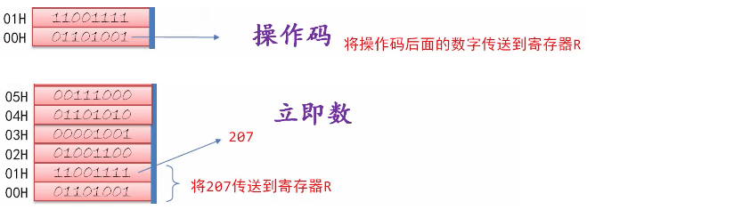
- 第一条指令占用两个字节的内存空间。这一条指令的第一个字节，被称为
操作码。这个操作码 0110 10001 指定的操作是将操作码后面的数字 1100 1111 (207)传送到寄存器 R。因此，这一条指令的意思是， 将207传送到寄存器 R。显然在这一条指令中 207 是被操作的数字，也就是操作数，它是直接包含在这一条指令中的，是这一条指令的组成部分。因此，这样的操作数被称为是立即数Immediate ，意思是它是直接包含在指令中的，可以立即从指令中取得。
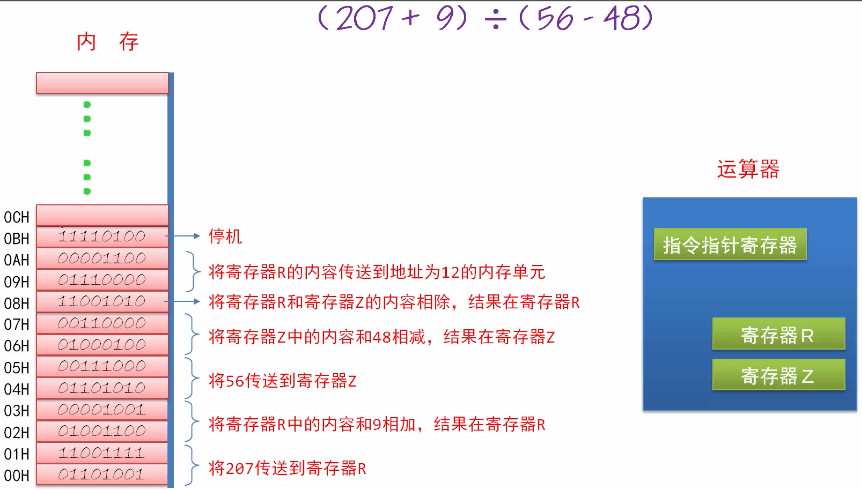
- 第二条指令也是两个字节。操作码是 0100 1100，指定的操作是将寄存器 R 中的内容和操作码后面的数字相加，结果依然在寄存器 R 里。操作码后面的数字是 0000 1001(9)，因此,这一条指令的意思是，将寄存器 R 中的内容和 9 相加，结果还在寄存器 R 中。
- 第三条指令也是两个字节。操作码是 0110 1010 ，指定的操作是将操作码后面的数字传送到寄存器 Z 。操作码后面的数字是 0011 1000(56)。所以这一条指令的意思是，将指令中的立即数 56 传送到寄存器 Z。
- 第四条指令也是两个字节。操作码是 0100 0100 ，指定的操作是将寄存器 Z 中的内容和操作码后面的数字相减，结果依然在寄存器 Z 中。操作码后面的数字是 0011 0000(48)。因此，这一条指令的意思是，将寄存器Z 中的内容和立即数 48 相减，结果还在寄存器 Z 中。
- 第五条指令只有一个字节。只包含了操作码。操作码是 1100 1010，它指定的操作是将寄存器 R 和寄存器 Z 的内容相除，结果在寄存器
- 第六条指令也是两个字节。操作码是 0111 0000，指定的操作是将寄存器 R 中的内容传送到由操作码后面的操作数所指定的内存地址处。操作码后面的数字是 0000 1100(12)。对于当前的操作码来说，这个操作数是一个内存地址。因此，这条指令是将寄存器 R 中的内容传送到地址为 12 的内存单元。地址为 12 的内存单元是左侧标注为 0CH 的这个单元。因此，在这一条指令在执行时，操作数 12 被当成是地址，处理器通过地址线发送给内存，然后把寄存器 R 中的数字传送到这个地址(12)上的内存单元。
通过和前面的第一条指令和这一条指令进行比较。很容易分清指令中的立即数是什么意思。
指令执行和操作的对象是数。如果这个数已经在指令中给出了，不需要再次访问内存，那这个数就是 立即数 。比如第一条指令中的207，这个操作数是直接包含在指令中的，不需要再次访问内存取得，所以它是立即数。相反的，如果指令中给出的是地址，真正的操作数还需要用这个地址访问内存才能够取得，那这个操作数就不能称之为立即数。比如这一条指令中的12，它只是一个地址，并不是最终要操作的数字，最终要操作的数字，还需要用这个地址再次访问内存，才能够取得。
运算器一旦开启，它就会自动取指令和执行指令。在内存中，有些内容并不是指令。比如在这个内存中，从地址 0C 处开始，后面的内容就可能不会是指令。但是，机器工作时你插不上手，不可能在它恰好执行到最后一条指令时，让它停下来。因此，最好的办法就是设计一条 停机指令 让运算器执行这一条指令后，自动停止工作并保持停止前的状态。在这里最后一条指令就是地址 OB 处的指令。操作码是 1111 0100，它是停机指令执行停机操作。这个指令只有一个字节，当运算器执行这条指令之后，就会停止工作，这样一来，我们就可以从容的检查程序的执行结果。
处理器
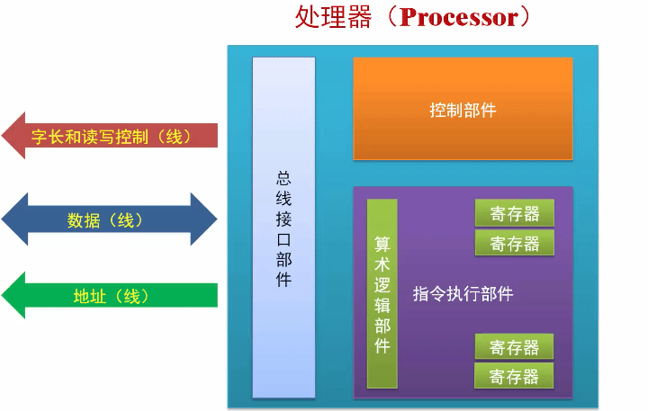
运算器功能有限，经过一代代改进后就变成了我们现在所说的处理器 Processor。
在电子计算中处理器是处于核心地位的器件，所以一些老的图书教材把它叫做中央处理单元、CPU。cpu 就是中央处理单元的意思。 处理器是一台电子计算机的核心，它会在振荡器脉冲的激励下从内存中获取指令，并发起一些由该指令所定义的一些操作，当这些操作结束后，它接着再取下一条指令并加以执行 。通常情况下，这个过程是自动的、连续不断的、循环往复的。如上图所示，处理器由总线接口部件、控制部件和指令执行部件组成。
总线接口部件：负责同外部设备的连接和数据交换。
它要发送地址信号给内存或者外部设备，然后通过数据线和这些设备交换数据。
指令执行部件：负责执行指令，包括算术逻辑运算指令、数据传送指令、执行流控制指令和机器状态控制指令。
算术运算和逻辑运算指令的执行是在算术逻辑部件中进行的，需要用到很多寄存器。这些寄存器用来保存运算过程中使用的操作数和运算结果。
数据传送指令在处理器内部的寄存器之间、处理器和内存之间、处理器和外围设备之间传送数据。
这些外围设备包括显示设备、存储设备、打印机、鼠标、键盘等。通过和外围设备的数据交换，计算机的功能也变得丰富起来，比如在显示器上显示文本、图形，可以使用键盘输入文字，进一步地我们可以用计算机写文档、聊天、购物、玩游戏、看视频等。
在内存里，指令是按顺序存放的，处理器按顺序将指令一条条取出并加以执行。就像水流一样连续不断，叫做 指令流 。
和我们前面所讲的不同， 处理器取指令和执行指令时并非始终按一个方向进行 ，而是根据需要从一个位置跳转到另一个位置重新取指令并加以执行。甚至可以反复执行同一段指令，直至不再符合某个条件时才退出这个循环断续往下执行。为此，处理器提供了多种执行流控制指令，可以让我们根据需要改变程序的执行流程。
现在的处理器是极其复杂的，有些功能和部件只能在处理器处于特定的工作模式时才能开启，或者需要程序员决定何时开启。为此处理器还提供了各种机器状态控制指令。
在处理器内部，控制部件负责协调和控制整个处理器的运行状态。
如什么时候取指令、何时输出地址、何时发送数据、何时接收数据、何时执行指令，都是由控制部件协调执行的。
处理器的工作是自动取指令并执行指令，对于任何一款处理器来说它可以识别和执行哪些指令是在设计和制造时就已经决定了的。任何一款处理器它可以识别所有指令的集合，叫做这款处理器的 指令集 。现在是指令集可以包含几百甚至上千条种指令。
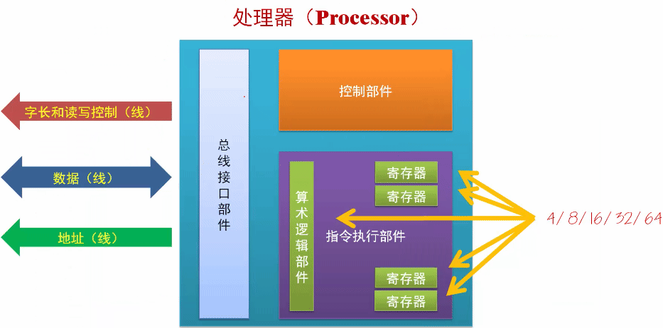
在处理器内部， 算术逻辑部件和所有寄存器的宽度都是一致的 ，比如说都是 4位、8位、16位、32位、64位。这个数据宽度就是处理器的 字长 。我们平时所说的 8/16/32/64 位处理器，就是指处理器的字长。8 位处理器拥有 8 位的算术逻辑部件和寄存器；64 位处理器拥有 64 位的寄存器和算术逻辑部件。当然， 处理器的字长通常也和连接内存的数据线的宽度是一致的 ，这样才能高效地访问内存和其它设备。
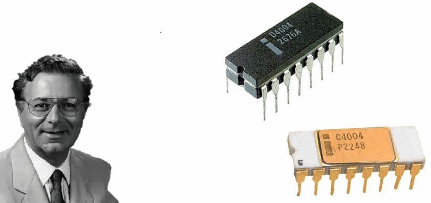
1971 年，intel 费德里科·法金（FedericoFaggin）设计出第一款自动取指令并执行的芯片， 4004 处理器问世。这个处理器可以做每秒 10 万次加法运算。
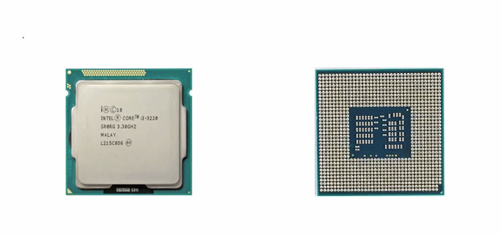
上图是 intel 的处理器，左边是处理器正面，右边是处理器的反面(引脚面：地址线引脚、数据线引脚、控制线引脚、供电引脚)。经过几十年的发展处理器越来越复杂功能越来越强。汇编语言的产生
程序(Program) ：程序就是解题的步骤和过程；
编程(Programming) ：就是编写程序，就是针对一个具体的问题编写解题的步骤和过程。
为了给计算机编程，最早用的是开关、跳线，通过开关、跳线得出二进制的数字和指令，再将它们写入内存。那个时代计算机体积庞大、操作繁琐，尤其是编写大型复杂的程序。
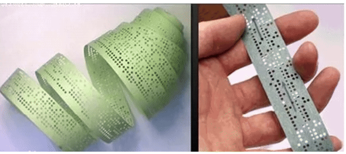
为了方便，后来人们发明了纸带编程。纸带就是一卷长长的纸条，人们用打孔机在纸带上打孔，有孔和无孔代表比特 1 和比特 0。为了把编好的程序输入到计算机的内存中，需要先把它们转换成二进制的形式，然后用打孔机在纸带上打孔，最后由纸带阅读机转换成二进制的电信号写入内存。把程序输入内存之后，剩下工作就是让处理器执行了。
现在我们有了显示器和键盘，也有了操作系统，键盘可以打字、编程，操作系统为我们提供了一个好的环境。我们可以在操作系统中启动一个文本编辑器来编辑程序，如下：
如果用二进制编程会很抽象、难以理解、容易出错。
11000100 11110010 00100100 10101011 01000010 00000101 10000000 01101100 10001111
为了减轻程序员工的负担，人们发明了汇编语言。 汇编语言使用文本符号来代表处理器指令 。由于和人类的自然语言相接近，所以很容易看懂，也很容易书写。如下
mov r, 207 add r, 9 mov z, 56 sub z, 48 div r, z mov [12], r hlt
解释如下
mov r, 207 把指令中的立即数 207 传送到寄存器 R add r, 9 用寄存器 R 中的数字和指令中的立即数 9 相加，结果在寄存器 R mov z, 56 把指令中的立即数 56 传送到寄存器 Z sub z, 48 用寄存器 Z 中的数字和指令中的立即数 48 相减，结果在寄存器 Z div r, z 用寄存器 R 中的数字除以寄存器 Z 中的数字，商在寄存器 R mov [12], r 将寄存器 R 中的数字传送到内存地址为 12 的内存区域。中括号 [x] 表示不是立即数，是内存地址 hlt 停机
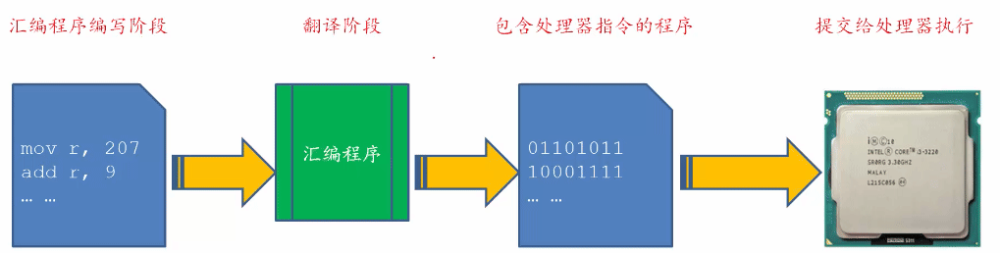
用汇编语言书写的程序只是一些文本和符号，人类能看懂但处理器不懂，因此，需要把汇编语言编程转换成包含机器指令的程序。如上图所示，整个转换过程
- 汇编程序编写阶段
- 翻译阶段：用汇编程序将汇编程序翻译成包含机器指令的程序。可以想到，世界上第一个汇编程序是用机器指令编写的。
- 包含处理器指令的程序：转换成了包含机器指令的程序。即文本符号转换成二进制的机器指令。
- 这个程序可以提交给处理器直接执行
手机、车床、智能冰箱都是电脑
练习3
- 假定处理器正在从物理地址为 0x25C0 的位置取指令，这条指令的长度是 3 个字节，那么下一条指令的物理地址是____。
- 什么是处理器的字长和指令集？
关于指令的执行，以下说法正确的是：
A. 处理器始终按一个方向取指令和执行指令；
B. 处理器可以反复（循环）执行一段指令；
C. 处理器可以用跳转指令从一个内存位置跳转到另一个内存位置继续执行。
答案
25c3 ------ 25c2 ------ 25c1 ------ 25c0 ------ 1. 0x25c3 2. 字长：处理器单次可以操作的最大数据长度，它等于算术逻辑单元的数据宽度和寄存器的最大宽度。 指令集：一个处理器可以识别和执行的指令集合 3. B C A 错，处理器不但但是按一个方向来取指令和执行指令，也可以循环执行指令，或者从一个位置跳转到另一个位置。